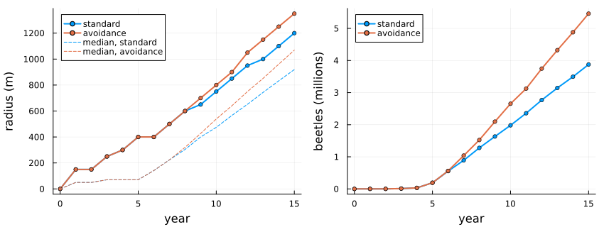
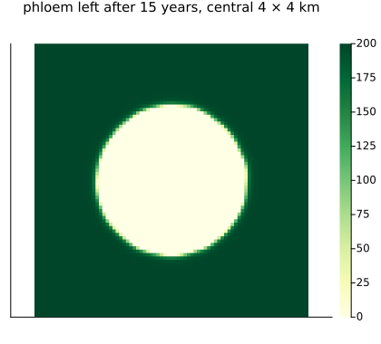
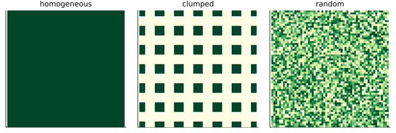

Emerald ash borer
Simon Frost
- Overview
- The model
- Spread year by year
- The arrangement of ash
- How many founders
- The source’s code
- Deviations from the source
Overview
The emerald ash borer, Agrilus planipennis, a beetle from Asia found near Detroit in 2002, has killed hundreds of millions of ash trees in North America. Its larvae feed in the phloem under the bark, girdling the tree. Mercader et al. (2011) asked how far an infestation spreads from a single point, and how that depends on where the ash is and on how the females choose where to lay. Their model is a coupled map lattice: cells of 50 m hold amounts of ash phloem and numbers of beetles, which spread, breed and eat phloem each year.
This implementation is a reproduction of the model’s two behaviours in its published code, and an inferred version of a third; it reproduces the source’s radii of infestation year by year.
ENV["GKSwstype"] = "100"
using EcologicalCellularAutomata
using CellularAutomataCore
using Plots
using Random
using StatisticsThe model
Each year:
- adults emerge from larvae that took one year, and from those that took two;
- they disperse from their cell by a negative exponential kernel (
b = 0.037per metre), normalised over the cells within 50 cells; with avoidance, cells without phloem are treated as 1.8 km further away; - each female lays
r0 = 10.35female offspring, as far as the phloem allows atC = 0.0113m² per larva, which the larvae eat; - a share
-0.194 ln(x) + 0.986of the larvae,xlarvae per m² of phloem, take two years to develop.
The model is deterministic. The landscape is surrounded by a border of 2 cells where dispersing beetles are lost, as in the source’s code.
prob = problem(:emerald_ash_borer)
size(prob.u0.phloem), sum(prob.u0.phloem[3:(end - 2), 3:(end - 2)])((209, 209), 8.405e6)The landscape is 205 × 205 cells (about 10 × 10 km) holding 8,405,000 m² of phloem, here spread evenly, 200 m² a cell. One hundred adults start at its centre.
Spread year by year
function spread(; years=15, kwargs...)
integ = init(problem(:emerald_ash_borer; years, kwargs...); save_everystep=false)
out = [eab_spread(integ.u)]
while integ.t < years
step!(integ)
push!(out, eab_spread(integ.u))
end
return out, integ.u
end
avoid, final = spread()
standard, _ = spread(; behaviour=:standard)
Int.(getfield.(avoid, :radius))16-element Vector{Int64}:
0
150
150
250
300
400
400
500
600
700
800
900
1050
1150
1250
1350These are the radii of infestation, from year 0 to year 15, with avoidance: the farthest cell from the origin holding at least one larva. They are those of the source’s Fig. 9, year by year.
p1 = plot(0:15, [getfield.(standard, :radius) getfield.(avoid, :radius)]; marker=:circle,
ms=3, lw=2, label=["standard" "avoidance"], xlabel="year", ylabel="radius (m)",
legend=:topleft)
plot!(p1, 0:15, [getfield.(standard, :median) getfield.(avoid, :median)]; ls=:dash,
color=[1 2], label=["median, standard" "median, avoidance"])
p2 = plot(0:15, [getfield.(standard, :beetles) getfield.(avoid, :beetles)] ./ 1e6;
lw=2, marker=:circle, ms=3, label=["standard" "avoidance"], xlabel="year",
ylabel="beetles (millions)", legend=:topleft)
plot(p1, p2; layout=(1, 2), size=(850, 320), left_margin=4Plots.mm,
bottom_margin=4Plots.mm)
Without avoidance, larvae fill the cells near the origin, eat them out, and the beetles emerging there keep laying in empty cells nearby. With avoidance they fly over the eaten-out core to fresh ash, so the infestation spreads further and holds more beetles: after 15 years 1350 m and 5.5 million here, against 1200 m and 3.9 million without (the source: 1350 m and about 5.3 million, 1200 m and about 3.8 million).
heatmap(final.phloem[3:(end - 2), 3:(end - 2)][63:143, 63:143]; aspect_ratio=1, c=:YlGn,
title="phloem left after 15 years, central 4 × 4 km", titlefontsize=10,
xticks=false, yticks=false, size=(420, 380))
The arrangement of ash
The source compares three landscapes with the same total phloem: even, clumped (blocks of 5 × 5 cells separated by gaps of 5 empty cells) and random (cells holding 0 to 400 m² at random).
plot([heatmap(eab_environment(k; rng=Random.Xoshiro(1))[73:133, 73:133]; aspect_ratio=1,
c=:YlGn, title=string(k), titlefontsize=10, xticks=false, yticks=false,
colorbar=false)
for k in (:homogeneous, :clumped, :random)]...; layout=(1, 3), size=(800, 270))
The central 3 × 3 km of each. Fifteen years in each landscape, with each behaviour, and the source’s values read from its Figs 4 and 5 (radius in m, beetles in millions):
source = Dict((:homogeneous, :standard) => (1200, 3.8),
(:homogeneous, :avoidance) => (1350, 5.3),
(:homogeneous, :resource_bias) => (1350, 5.3),
(:clumped, :standard) => (750, 1.0), (:clumped, :avoidance) => (1650, 9.0),
(:clumped, :resource_bias) => (2600, 10.5),
(:random, :standard) => (1200, 3.8), (:random, :avoidance) => (1500, 6.2),
(:random, :resource_bias) => (2050, 11.0))
cases = [(e, b) for e in (:homogeneous, :clumped, :random)
for b in (:standard, :avoidance, :resource_bias)]
finals = fetch.([Threads.@spawn eab_spread(solve(problem(:emerald_ash_borer; environment=e,
behaviour=b); saveat=15).u[end])
for (e, b) in cases])
[(environment=e, behaviour=b, radius=r.radius, beetles=round(r.beetles / 1e6; digits=2),
source=source[(e, b)]) for ((e, b), r) in zip(cases, finals)]9-element Vector{@NamedTuple{environment::Symbol, behaviour::Symbol, radius::Float64, beetles::Float64, source::Tuple{Int64, Float64}}}:
(environment = :homogeneous, behaviour = :standard, radius = 1200.0, beetles = 3.88, source = (1200, 3.8))
(environment = :homogeneous, behaviour = :avoidance, radius = 1350.0, beetles = 5.46, source = (1350, 5.3))
(environment = :homogeneous, behaviour = :resource_bias, radius = 1350.0, beetles = 5.46, source = (1350, 5.3))
(environment = :clumped, behaviour = :standard, radius = 750.0, beetles = 1.02, source = (750, 1.0))
(environment = :clumped, behaviour = :avoidance, radius = 1650.0, beetles = 8.39, source = (1650, 9.0))
(environment = :clumped, behaviour = :resource_bias, radius = 2000.0, beetles = 8.32, source = (2600, 10.5))
(environment = :random, behaviour = :standard, radius = 1200.0, beetles = 3.45, source = (1200, 3.8))
(environment = :random, behaviour = :avoidance, radius = 1450.0, beetles = 6.27, source = (1500, 6.2))
(environment = :random, behaviour = :resource_bias, radius = 1850.0, beetles = 8.99, source = (2050, 11.0))Standard and avoidance reproduce the source in every landscape. Clumping hinders a beetle that does not avoid empty ground: most of its offspring land in the gaps, so in the clumped landscape it spreads only 750 m. A beetle that avoids empty ground spreads furthest there, as each clump is eaten out and the beetles fly to the next. The source’s third behaviour, a bias towards cells rich in phloem, is inferred here from its description; it reproduces the homogeneous result, and spreads further than avoidance in the other two landscapes, as in the source, but less far.
How many founders
The source compares 100 and 1,000 founders, and reports the difference in the final number of beetles as 67.5, 21.8 and 10.3% in the clumped, homogeneous and random landscapes:
envs = (:clumped, :homogeneous, :random)
founders = fetch.([Threads.@spawn eab_spread(solve(problem(:emerald_ash_borer; environment=e,
founders=f); saveat=15).u[end])
for e in envs for f in (100, 1000)])
[(environment=e, beetles_100=round(founders[2k - 1].beetles / 1e6; digits=2),
beetles_1000=round(founders[2k].beetles / 1e6; digits=2),
difference=round(100 * (founders[2k].beetles - founders[2k - 1].beetles) /
founders[2k].beetles; digits=1),
radius_1000=founders[2k].radius)
for (k, e) in enumerate(envs)]3-element Vector{@NamedTuple{environment::Symbol, beetles_100::Float64, beetles_1000::Float64, difference::Float64, radius_1000::Float64}}:
(environment = :clumped, beetles_100 = 8.39, beetles_1000 = 4.24, difference = -98.0, radius_1000 = 1650.0)
(environment = :homogeneous, beetles_100 = 5.46, beetles_1000 = 6.84, difference = 20.2, radius_1000 = 1600.0)
(environment = :random, beetles_100 = 6.27, beetles_1000 = 6.84, difference = 8.3, radius_1000 = 1650.0)In the homogeneous and random landscapes, ten times as many founders give an infestation about 20% and 8% larger after 15 years (21.8% and 10.3% in the source), far from ten times larger, as the phloem near the origin limits it. In the clumped landscape the number of beetles swings from year to year, as the clumps are eaten out and the beetles fly to the next, and at year 15 the run with 1,000 founders happens to be in a trough; the source, whose clumped runs also oscillate strongly, finds 67.5% more.
The source’s code
The source’s R code has two features that its text does not describe. It reads each cell’s beetles column by column from a vector stored row by row, so the beetles of cell (i, j) disperse from cell (j, i); this changes nothing on the homogeneous and clumped landscapes, which are symmetric about the diagonal. And under avoidance it treats a cell as without phloem when its phloem is at most 0, but a cell whose phloem has just been eaten keeps a round-off error of either sign, so whether it repels beetles depends on the order of the arithmetic. The parameters transposed = true and bare (a small threshold such as 1e-9, making every eaten cell bare) reproduce the code given the same threshold to within round-off, cell by cell and year by year. The threshold matters on a clumped landscape, whose clumps are eaten out quickly:
small = eab_environment(:clumped; n=41)
[(bare=b,
beetles=round(eab_spread(solve(problem(:emerald_ash_borer; environment=small, years=8,
pmap=(; bare=b))).u[end]).beetles))
for b in (0.0, 1e-9)]2-element Vector{@NamedTuple{bare::Float64, beetles::Float64}}:
(bare = 0.0, beetles = 71488.0)
(bare = 1.0e-9, beetles = 3.033591e6)With the default, as in the code, a share of the eaten cells still attract beetles, which die there; counting every eaten cell as bare lets the beetles skip them and multiplies the larvae after 8 years about fortyfold. On the source’s full landscape the code itself gives the article’s 1650 m after 15 years with the default, and 1900 m with the threshold.
Deviations from the source
foreach(d -> println("- ", d), model_info(:emerald_ash_borer).deviations)- The source's Eq. 1 is misprinted; dispersal is normalised source by source over the 101 x 101 window clipped at the edge of the lattice, as the source's code does, with the distance of a cell from itself 0.25 cells.
- Avoidance adds 1.8 km (36 cells of 50 m), as the text says, to the distance of cells without phloem; the code's example uses 18 cells. The results barely change.
- Of the source's five foraging behaviours, Standard and Avoidance (the two in its code) are implemented as described. 'Resource Bias All' is inferred from the text: cells whose initial phloem is at or above the landscape's upper quartile are 33% nearer and those at or below the lower quartile 33% further, with no bias when the quartiles are equal. It reproduces the homogeneous result (1350 m) but spreads less than the source on the clumped (2050 against 2600 m) and random (1850 against 2050 m) landscapes. 'Stress bias' and 'Resource Bias Within 200 m', not in the code and ambiguously described, are not implemented.
- The clumped landscape is 5 x 5 blocks of cells separated by 5 empty cells, one centred, rescaled to the source's total of 8,405,000 m² (762.4 m² a cell, against the 784.4 m² the source states, which does not divide its total among whole blocks). The random landscape puts the 17 levels from 0 to 400 m² on equal numbers of cells as far as they divide, sets the centre to 200 m² if it would be empty, and rescales to the total; the source does not say how its levels were matched to the total.
- The radius of infestation is the largest distance from the origin of a cell with at least one larva, floored to whole cells and times 50 m, as the source's code computes it; with this rule the source's year-by-year radii are reproduced exactly.
- The cluster-gradient, habitat-quality and Saginaw County experiments are not included; the Saginaw phloem map is not published.
- By default the adults of each cell disperse from that cell. The source's code indexes its row-major vector of beetles column by column, so the beetles of cell (i, j) disperse from cell (j, i); this changes nothing on landscapes symmetric about the diagonal (homogeneous and clumped) and, on the random landscape, about 1% of the larvae after 8 years. transposed = true reproduces it.
- Under avoidance a cell is without phloem when its phloem is at most bare m² (0 by default, as the code). A cell just eaten out keeps a round-off error of either sign (about 13% of such cells keep a positive one), so which eaten cells count as bare depends on the order of arithmetic and differs between the code and this package; on the 41 x 41 clumped landscape this changes the larvae after 8 years from 0.07 (here) or 0.30 million (the code) to 3.0 million when every eaten cell counts (bare = 1e-9, in both). The default reproduces the article's figures, which came from the code as it is.Mercader, Rodrigo J., Nathan W. Siegert, Andrew M. Liebhold, and Deborah G. McCullough. 2011. “Influence of Foraging Behavior and Host Spatial Distribution on the Localized Spread of the Emerald Ash Borer, Agrilus Planipennis.” Population Ecology 53 (2): 271–85. https://doi.org/10.1007/s10144-010-0233-6.